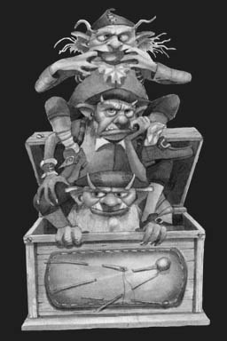
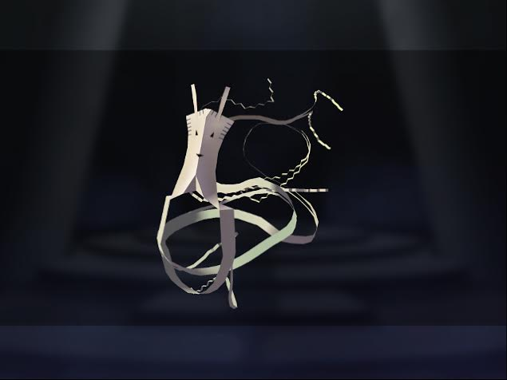

|
Un poco de historia
A lo largo de la historia, brujos y magos se han servido en mayor o menor medida de distintos tipos de espíritus a modo de ayudantes. Estos espíritus podían ser las almas de los antepasados, espíritus locales de la naturaleza, demonios, genios o larvas astrales….
En el chamanismo podemos ver de manera bastante clara la relación que adopta el chamán con los espíritus. Dicha relación será distinta según el tipo de espíritu con el que vaya a trabajar.
Los chamanes llegan a establecer cierta familiaridad con sus espíritus. Se relacionan con una amplia categoría pero solo tienen influencia directa sobre unos pocos. Los espíritus familiares y auxiliares adoptan con frecuencia formas animales, de fantasmas, o de espíritus del bosque. En ello encontramos cierta semejanza con los familiares típicos de la brujería medieval europea de los cuales hablaremos más adelante.
Mircea Eliade nos cuenta cómo los chamanes esquimales, después de su iniciación, tienen que proveerse por sí mismos de sus propios espíritus familiares. Suelen ser animales que adoptan una forma humana. Y acuden por su propia voluntad cuando el aprendiz lo merece. Cuantos más espíritus auxiliares tenga el chamán, más fuerte será. éstos a veces se heredan de un chamán a otro, como los elementales del folclore europeo. Las relaciones entre el mago y sus espíritus varían y son o bien como las que se dan entre un hechicero y su protegido, o entre un servidor y su amo, pero siempre de carácter íntimo. Si son heridos, el mago también sufre las consecuencias. Los espíritus ayudantes pueden ir desde un antepasado, pasando por filas de espíritus soldados hasta ser el alma de una planta alucinógena. Pueden llevarles de viaje, protegerles y darles poderes y conocimientos específicos. También se usan como emisarios o sirvientes.
Una variante de lo que podríamos llamar “magia negra” dentro del chamanismo es la confección que hacen ciertos brujos de efigies a base de huesos y restos animales a las que dan vida y usan para tareas de venganza y tormento.
Si nos vamos a Grecia y Roma, lo más común era rendir culto a los antepasados o a los genios locales.
En Egipto tenemos un ejemplo claro del uso de servidores artificiales. Para los antiguos egipcios, el Más Allá era una prolongación de la vida terrenal. Debían vestirse, alimentarse, disfrutar del ocio y trabajar. Para no tener que hacer todo esto, el ajuar funerario contenía servidores mágicos que mediante el poder de la palabra, se convertían en auténticos criados. La inscripción del capítulo VI del Libro de los Muertos, es la que dota de vida a la estatua. Los Ushebtis son servidores funerarios cuyo nombre significa “el que responde”.
En Cabaláh encontramos el famoso caso del Gólem. Un hombre de barro al que el rabí insufla vida después de moldearlo y le manda como tarea mantener limpia la sinagoga. Un servidor mágico al uso, pero que, por cierta negligencia del mago,se descontrola y va sembrando el caos por el pueblo. Esa es la advertencia mágica que ofrece la leyenda. No des vida a algo que puede ser más poderoso que tu y que puede volverse en tu contra. No solo el Gólem de Praga es un ejemplo judío, también existe la leyenda toledana del hombre de palo. Esta vez, un autómata de madera creado para recaudar limosna con un final más feliz.
Los famosos jinns árabes proceden a su vez de la mitología semítica. El término árabe es jinn o djinn. Se dice que son seres de fuego que pueden ayudar o atacar al ser humano según su talante. Los genios árabes no se corresponden a la perfección con los genios semíticos originales ya que el Corán impuso un mismo nombre a muchas manifestaciones distintas propias de los países islamizados. Así, en lugares donde el mazdeísmo hizo mella antes que el islam, los genios son protagonistas de diversas prácticas mágicas alejadas de la ortodoxia sunní; para los tuareg, son tentadores del desierto y ladrones nocturnos, así como para los musulmanes de la India pueden ser molestos invasores del hogar que deben ser expulsados usando ciertas suras del Corán, en una ceremonia no muy distinta del exorcismo católico.
El islam considera a los genios como seres creados de fuego sin humo, dotados como el ser humano de libre albedrío y que pueden obedecer a Dios o bien a Iblís. Los genios, a diferencia de los ángeles, comparten el mundo físico con los seres humanos y son tangibles, aunque sean invisibles o adopten formas diversas. Los genios y los humanos pueden casarse y pueden llegar a procrear.
Fueron muchos los pensadores musulmanes medievales que dudaron de la existencia de los genios (no así de la de los ángeles) o directamente la negaron, como Avicena, Al-Farabi o Ibn Jaldún. Pero la creencia popular en los genios sigue estando muy extendida en las áreas rurales de algunos países islámicos y es muy frecuente su aparición en la literatura popular. En occidente son conocidos sobre todo los genios malignos del tipo ifrit, a través de los cuentos de Las mil y una noches.
Una muestra a la vez de la creencia popular en los genios y de que pueden ser seres dignos de devoción e imitación la encontramos en Marruecos, donde, en el marco del muy popular culto a los morabitos o santones, se inscribe el culto a un personaje que no es humano sino genio. Se trata del morabito Sidi Shamharush, situado en la aldea del mismo nombre en el Atlas, y al cual acude la gente de la zona en peregrinación para ganarse la baraka o bendición divina por intercesión del santón. El culto es similar al que se prodiga a otros morabitos, salvo por el hecho de que en este caso no gira alrededor de una tumba, ya que Sidi Shamharush no está muerto: vive de día bajo la forma de perro negro y por la noche adopta apariencia humana.
Los genios no son necesariamente malignos. En sus más benignas formas de comportamiento, suelen ser bromistas y embaucadores, lo cual nos recuerda la naturaleza de los duendes europeos. Pueden ser invisibles o cambiar a voluntad de forma, haciéndose pasar por animales o presentándose con la apariencia de una mujer hermosa para visitar a los hombres por la noche, hacerles el amor y robarles la energía, como si se tratara de un súcubo. Pueden también ser dominados a través de un objeto (como la lámpara maravillosa de Aladino) y convertirse así en esclavos de quien posea dicho objeto.
En la mitología guanche (Tenerife, Canarias, España), también existía la creencia en seres que calificaríamos como genios, como los llamados Dioses paredros o Maxios (genios domésticos y de la naturaleza), los Tibicenas (genios malignos) y también el demonio Guayota (dios o diablo del mal aborigen), al que, al igual que al Iblís árabe, se le identifica a veces con un genio. Los guanches eran de origen bereber, del norte de África, lo que refuerza la hipótesis de un parentesco entre los genios africanos y este panteón isleño.

Los espíritus familiares del folklore brujeril del Medievo, normalmente adoptan la forma de animales domésticos o de criaturas mitológicas o demoniacas. Su nombre proviene de la norma por la cual el dueño debía pasar el conocimiento y la manera de mantenerlo a sus hijos, para que así el familiar continuara en la familia.
El familiar europeo es un ser que obedece los designios de su amo o persona con la cual ha hecho un pacto, actuando como sirviente y ayudante. Normalmente no es tan inteligente como su amo aunque los familiares del tipo férrico (duendes y hadas) suelen ser más inteligentes que el ser humano medio.
Los familiares realizan todo tipo de tareas para sus amos, desde tareas de índole doméstica hasta tareas arcanas. Si un familiar tiene el aspecto de un animal doméstico, como un gato o un búho, puede actuar como espía para su amo. En este tipo de familiares,la relación entre estos seres y a quienes sirven puede llegar a ser muy estrecha. Se dice que la naturaleza solitaria de muchos magos hace que vean a sus familiares como sus mejores amigos.
En algunas tradiciones la obtención del familiar está relacionada con pactos con demonios mayores que ofrecen al mago dichas criaturas. Podemos abrir cualquier grimorio medieval y encontrar rituales para conseguir elementales o diablillos.
Los familiares más conocidos suelen ser los gatos (en especial los gatos negros), aunque también suelen verse en forma de búhos, perros, ranas y sapos; Pueden sin embargo adoptar apariencias más etéreas.
En muchas de las distintas manifestaciones de la cultura latinoaméricana se describen diferentes versiones sobre espíritus familiares, pero la más difundidas los identifican con especies de criaturas mitológicas y/o demoniacas que dan poder y/o dinero a su poseedor. Por ejemplo en Argentina podemos mencionar a la criatura denominada simplemente como "El Familiar". Igualmente en Chile existe la leyenda de la mítica serpiente Culebrón, y más específicamente en Chiloé podemos encontrar los mitos del Vilpoñi y del Lluhay.
Dentro de la mitología amerindia podemos mencionar a los espíritus Wekufes de la mitología mapuche, el cual sería trasmitido por los Calcus (hechiceros mapuches, equivalentes a un brujo) de una generación a otra; y con los cuales obtendrían un poder mágico. Dentro de esta mitología igualmente podemos mencionar a los Anchimallén, quienes también cumplirían la función de un familiar.
Si nos vamos a oriente nos topamos con que en Japón los Shikigami son espíritus que el hechicero puede invocar. Suelen utilizarse para proteger y servir a su amo por lo que se asemejan al concepto occidental de espíritu familiar de un mago. Hay distintos tipos siendo el más común el representado por recortes de papel hechizados. Estos espíritus son invisibles durante la mayor parte del tiempo pero pueden hacerse visibles si se les vincula a pequeños muñecos de papel. A veces también se muestran como animales, especialmente pájaros. Se conjuran mediante una compleja ceremonia y su poder se conecta al del mago. Si el mago sabe controlarlo puede hacer que posea a animales e incluso a personas para manipularles. Si por el contrario no es capaz de dominarlos, ganarán en voluntad y conciencia propias y se vengarán.
En la actualidad el uso de servidores mágicos se ha vuelto a impulsar gracias a la Magia del Caos. Que recupera el modo medieval de crear sígiles (sellos) con los que dominar a los espíritus. En los grimorios medievales los sellos estaban vinculados por lo general a ángeles o demonios. Ahora se utiliza el mismo método para crear entidades que no son ni ángeles ni demonios. El enfoque moderno trata de visualizar a los demonios y a los ángeles como partes de nuestra personalidad con las que podemos trabajar. El servidor actuaría del mismo modo. Simplemente se crea y se separa del mago objetivándolo para trabajar con ello como si se tratara de un agente exterior.

Clases de espíritus auxiliares
El mago debe saber diferenciar entre un elemental, un servidor, y un familiar antes de ponerse a trabajar con ellos. No voy a hablar ni de los espíritus de los muertos ni de los demonios ni de los ángeles porque eso ya es otro tema.
Los elementales son espíritus relacionados con los cuatro elementos de la naturaleza: tierra, aire, fuego, agua, (gnomos, silfos, salamandras y ondinas). Para trabajar con ellos basta conjurarlos dentro del círculo mágico. Donde mejor contacto se establece es obviamente en la naturaleza. Ellos son libres de acudir y de participar en el ritual o no. Son espíritus neutrales, ni buenos ni malos, con lo cual el mago debe saber bien lo que hace y atenerse a las consecuencias.
Los servidores son elementales artificiales sometidos totalmente a la voluntad del mago. Suelen tener una sola función y cierto período de vida y uso. Los servidores tienen una voluntad limitada y nulo libre albedrío. Suelen guardarse en sígiles o en efigies y después de haber llevado a cabo su misión se les destruye.
El elemental artificial se crea a base de sentimientos, emociones o pensamientos fuertes. Se supone que todos hemos creado alguno sin darnos cuenta, por ejemplo en un período alocado de lujuria o de odio. Son parecidos a las larvas astrales (espíritus humanos que tuvieron una muerte violenta o que buscan venganza) ya que se nutren de la energía afín a la emoción de la que nacieron.
Los espíritus familiares son de dos tipos principalmente. Los naturales y físicos y los artificiales que a su vez pueden ser mentales, astrales o físicos. Los naturales son aquellos animales o mascotas que nos encontramos o que más bien nos encuentran ellos a nosotros y nos eligen para ser nuestros compañeros mágicos. Todo brujo tiene un gato, un perro, un cuervo, una serpiente, una rata… Son animales con una personalidad especial. Por lo general nos acompañan en los rituales, nos protegen y nos ayudan a canalizar.
Los familiares artificiales pueden crearse desde el plano mental (el más sencillo), desde el astral (el más potente) y acabar tomando forma física (lo más difícil). Lo bueno de los familiares artificiales es que no tienen por qué tener fecha de caducidad como los servidores. Pueden acompañarte a lo largo de tu vida y de este modo ir creciendo y tener cada vez más poder. El único inconveniente es que el mago pierda el control sobre ellos. Porque aunque el familiar está hecho de ti mismo, siendo una proyección de tu energía es como un hijo, lleva tu sangre pero tiene identidad propia, tiene libertad. No es como un servidor que te va a obedecer si o si; el familiar solo es tu hijo y te obedecerá cuando quiera. No es un esclavo.
¿Consecuencias? Pues no tiene por qué pasar nada malo siempre y cuando lo hayas creado a partir de amor, y le cuides, le mimes y lo alimentes bien. No se deben dejar sueltos y deben de estar atareados para que en su aburrimiento no les dé por hacer trastadas.
El servidor puede ser un vampiro ya que se va a nutrir de aquello que tu le marques. Por supuesto el servidor o familiar también puede alimentarse de varias fuentes. Yo recomiendo “darle de mamar” directamente de uno mismo para evitar el descontrol de energías ajenas.
Creación
Dicho esto pasamos a la secuencia ritual:
La condición base para crear un elemental es tener suficiente energía para ello y estar sano. Tampoco es que se necesite mucha, más que nada porque puede hacerse de una vez o poco a poco a lo largo de varios días. Lo importante es saber extraer la energía propia o externa y condensarla, darle forma y controlarla.
1. Definir la energía, esencia y naturaleza del servidor mágico.
2. Adjudicarle un elemento o varios según la función que vaya a realizar.
3. Adjudicarle un nombre y un símbolo secretos a no ser que vaya a ser compartido.
4. Darle una imagen.
5. Darle una casa donde pueda descansar.
6. Escribir un diario solo para el servidor.
7. Darle fecha de caducidad si se quiere.
8. Alimentarlo
(Para más información sobre el ritual, leer “Creating magickal entities” de David Cunningham.)
Bibliografía de interés:
· “El chamanismo y las técnicas arcaicas del éxtasis.” de Mircea Eliade.
· La trilogía: “Guía de los seres mágicos de España. Duendes, Hadas y Gnomos. “ de Jesús Callejo.
|
 RSS
RSS